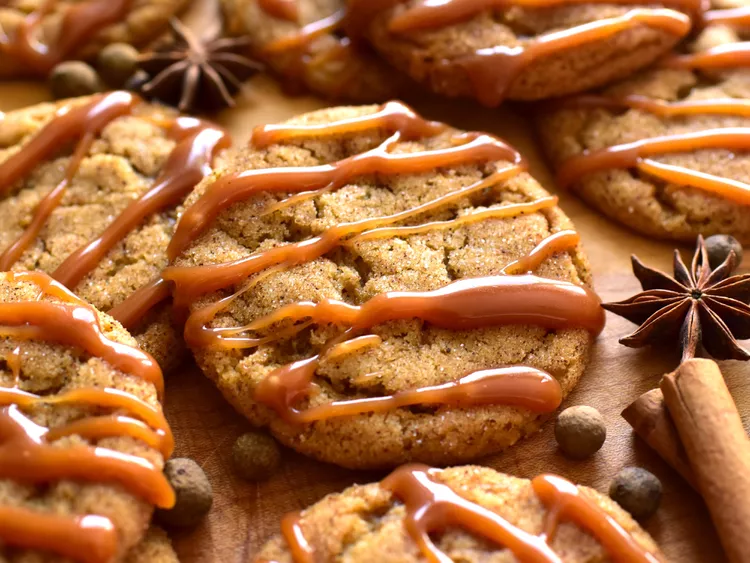

Brown Butter Caramel Chai Cookies

Description
In these chewy brown butter caramel chai cookies, you’ll find brown butter
and chai spices are a perfect pair. The dough does need to chill in the fridge
for about 30 minutes before baking, so be sure to plan ahead.
Ingredients
Chai Spice Mix
- 2 teaspoons ground cinnamon
- 1 teaspoon ground cardamom
- 1 teaspoon ground ginger
- 1/2 teaspoon ground nutmeg
- 1/2 teaspoon ground allspice
- 1/4 teaspoon ground cloves
Cookie Dough
- 1/2 cup unsalted butter
- 1/2 cup brown sugar
- 2 tablespoons white sugar
- 1/4 cup caramel sauce
- 1 large egg
- 2 teaspoons vanilla extract
- 1 1/2 cups all purpose flour
- 1 1/2 teaspoons chai spice mix
- 1 teaspoon baking powder
- 3/4 teaspoon baking soda
- 3/4 teaspoon salt
Cookie Dough
- 1/4 cup white sugar
- 1 tablespoon chai spice mix
Directions
- Stir cinnamon, cardamom, ginger, nutmeg, allspice, and cloves together in a small
bowl; set aside.
- Place butter into a light-colored, medium-sized saucepan over medium-low heat. Cook,
stirring often, until butter begins to brown and smells nutty, 5 to 7 minutes. Pour
butter into a large mixing bowl, and let cool for about 15 minutes.
- To the bowl with the browned butter, add brown sugar, 2 tablespoons white sugar,
1/4 cup caramel sauce, egg, and vanilla; mix until combined. If caramel sauce is very
thick, chunks of caramel may remain; clumps of caramel smaller than 1/2-inch are okay.
Mix in flour, 1 1/2 teaspoons of the chai spice mix, baking powder, baking soda, and
salt until combined. Chill dough in the refrigerator for 30 minutes.
- Preheat the oven to 350 degrees F (180 degrees C). Line 2 baking sheets with silicone
baking mats or parchment paper.
- In a small bowl, stir together 1/4 cup white sugar and 1 tablespoon of chai spice mix.
- Remove dough from the fridge, and scoop out a 1 tablespoon-sized piece of dough and
roll into a ball. Roll dough ball in the chai-sugar mixture until coated. Place on the
prepared baking sheet. Repeat with remaining dough and place dough balls 2 inches apart
onto the prepared baking sheets.
- Bake cookies in the preheated oven until they begin to crack on top and look slightly
set, 10 to 12 minutes. Allow cookies to cool on the pan for a few minutes before removing
to a wire rack to cool completely. If desired, drizzle cooled cookies with extra caramel sauce.